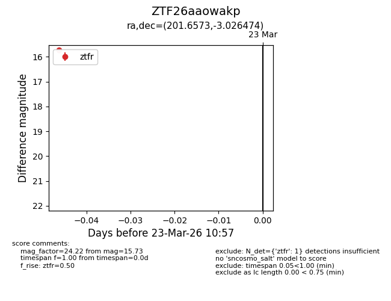
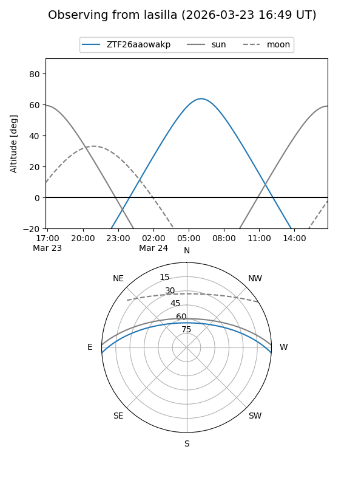
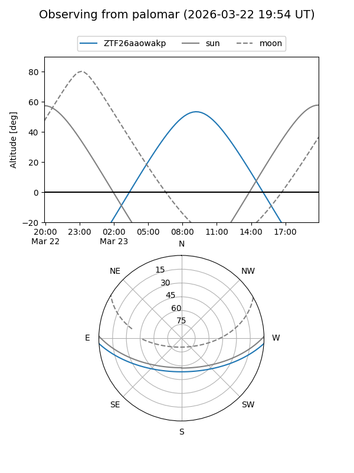

ZTF26aaowakp
Target ZTF26aaowakp at 2026-03-23 11:00
Aliases and brokers:
FINK: link
Lasair: link
ALeRCE: link
alt names
ZTF26aaowakp (ztf,fink_ztf)
Coordinates:
equatorial (ra, dec) = 201.6573,-3.02647
equatorial (HMS+DMS) = 13:26:37.75,-03:01:35.31
galactic (l, b) = (320.0155,+58.67314)
Flags:
Photometry:
last ztfr=15.73
1 ztfr detections
Lightcurve

Visibility


Additional plots